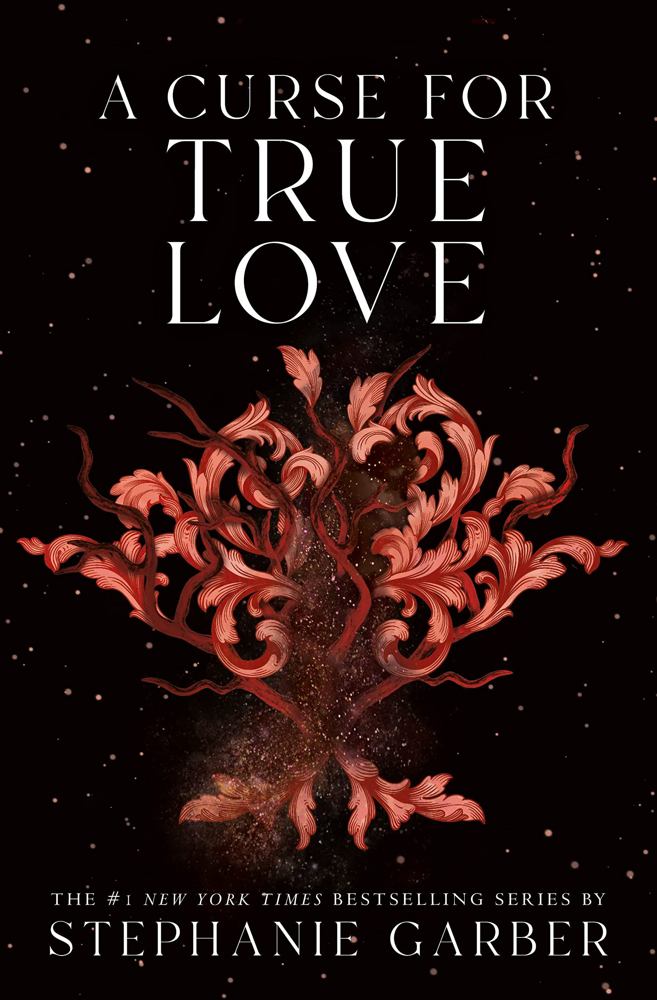

The Curse for True Love

˗ˏˋ ★ ★ ★ ★ ★ ˎˊ˗
Stephanie Garber
I really liked this book and thought it was a great ending to an amazing story. I loved the storyline and the characters as they were all developed perfectly.
I really enjoyed the storyline of Evangeline losing her memories as it was really interesting to read how Apollo manipulated her.
I liked Jacks' chapters in this book as I love his character and think he was a very interesting character to read about.
I liked the story of Apollo and how he was so unhinged. I was very glad when he got turned into a tree because he was an egotistical ass and deserved it.
I really liked the story of Jacks being the Archer as well and the way he called Evangeline,'Little Fox.' I found his character amazing again and loved all their little interactions. I especially loved when he taught Evangeline how to protect herself when she didn't know who he was. They were so cute together and deserved the world.
The ending was so good and I really enjoyed it. I liked how it wrapped up the storyline but also left an opening for more stories in the future. I loved how Apollo got what he deserved and that Jacks and Evangeline finally got their happy ending.
Overall this book series was amazing and I loved every bit of it. I loved the characters and the plot. It was so interesting to read and watch everything unfold. I loved the character of Evangeline as it was a nice break of all the main characters with a bunch of powers. I liked how she knew what she wanted and what she wanted was love. I also loved Jacks and all his retorts. He was such a good character and I loved reading from his point of view. I also loved Evangeline and Jacks together and in my opinion they are some of the best character's I've ever read about. I recommend this to everyone that wants a magical fantasy romance that is young adult.
Write a Review